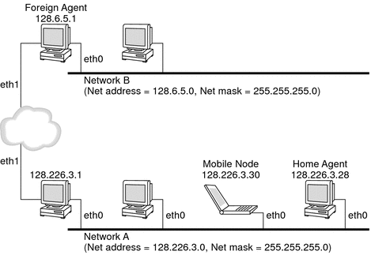
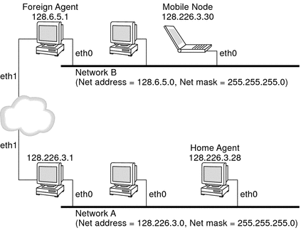

|
|||
|
1. Solaris TCPIP Protocol Suite (Overview) 2. Planning an IPv4 Addressing Scheme (Tasks 3. Planning an IPv6 Addressing Scheme (Overview) 4. Planning an IPv6 Network (Tasks) 5. Configuring TCP/IP Network Services and IPv4 Addressing (Tasks) 6. Administering Network Interfaces (Tasks) 7. Enabling IPv6 on a Network (Tasks) 8. Administering a TCP/IP Network (Tasks) 9. Troubleshooting Network Problems (Tasks) 10. TCP/IP and IPv4 in Depth (Reference) 12. About Solaris DHCP (Overview) 13. Planning for DHCP Service (Tasks) 14. Configuring the DHCP Service (Tasks) 15. Administering DHCP (Tasks) 16. Configuring and Administering DHCP Clients 17. Troubleshooting DHCP (Reference) 18. DHCP Commands and Files (Reference) 19. IP Security Architecture (Overview) 21. IP Security Architecture (Reference) 22. Internet Key Exchange (Overview) 24. Internet Key Exchange (Reference) 25. Solaris IP Filter (Overview) Mobile IP With Reverse Tunneling Routing Datagrams to and From Mobile Nodes Security Considerations for Mobile IP 28. Administering Mobile IP (Tasks) 29. Mobile IP Files and Commands (Reference) 30. Introducing IPMP (Overview) 31. Administering IPMP (Tasks) Part VI IP Quality of Service (IPQoS) 32. Introducing IPQoS (Overview) 33. Planning for an IPQoS-Enabled Network (Tasks) 34. Creating the IPQoS Configuration File (Tasks) 35. Starting and Maintaining IPQoS (Tasks) 36. Using Flow Accounting and Statistics Gathering (Tasks) |
How Mobile IP WorksMobile IP enables routing of IP datagrams to mobile nodes. The home address of the mobile node always identifies the mobile node regardless of where the mobile node is attached. When away from home, a care-of address is associated with the mobile node's home address. The care-of address provides information about the current point of attachment of the mobile node. Mobile IP uses a registration mechanism to register the care-of address with a home agent. The home agent redirects datagrams from the home network to the care-of address. The home agent constructs a new IP header that contains the care-of address of the mobile node as the destination IP address. This new header encapsulates the original IP datagram. Consequently, the home address of the mobile node has no effect on the routing of the encapsulated datagram until the datagram arrives at the care-of address. This type of encapsulation is called tunneling. After the datagram arrives at the care-of address, the datagram is de-encapsulated. Then the datagram is delivered to the mobile node. The following figure shows a mobile node that resides on its home network, Network A, before the mobile node moves to a foreign network, Network B. Both networks support Mobile IP. The mobile node is always associated with the home address of the mobile node, 128.226.3.30. Figure 27-2 Mobile Node Residing on Home NetworkThe following figure shows a mobile node that has moved to a foreign network, Network B. Datagrams that are destined for the mobile node are intercepted by the home agent on the home network, Network A. The datagrams are encapsulated. Then, the datagrams are sent to the foreign agent on Network B. The foreign agent strips off the outer header. Then the foreign agent delivers the datagram to the mobile node that is located on Network B. Figure 27-3 Mobile Node Moving to a Foreign NetworkThe care-of address might belong to a foreign agent. The care-of address might be acquired by the mobile node through the Dynamic Host Configuration Protocol (DHCP) or the Point-to-Point Protocol (PPP). In the latter situation, a mobile node has a colocated care-of address. Mobility agents (home agents and foreign agents) advertise their presence by using agent advertisement messages. Optionally, a mobile node can solicit an agent advertisement message. The mobile node uses any mobility agent that is attached locally through an agent solicitation message. A mobile node uses the agent advertisements to determine whether the mobile node is on the home network or a foreign network. The mobile node uses a special registration process to inform the home agent about the current location of the mobile node. The mobile node is always “listening” for mobility agents advertising their presence. The mobile node uses these advertisements to help determine when the mobile node moves to another subnet. When a mobile node determines that the mobile node has moved its location, the mobile node uses the new foreign agent to forward a registration message to the home agent. The mobile node uses the same process when the mobile node moves from one foreign network to another foreign network. When the mobile node detects that it is located on the home network, the mobile node does not use mobility services. When the mobile node returns to the home network, the mobile node deregisters with the home agent. |
||
|